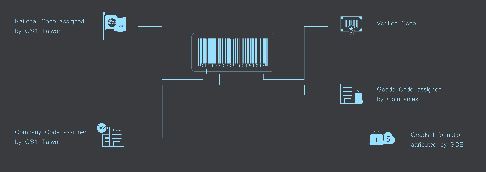
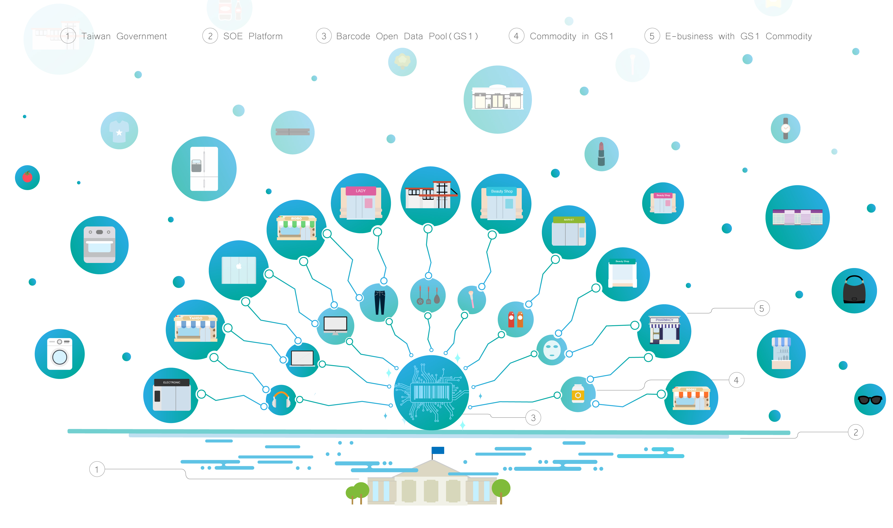
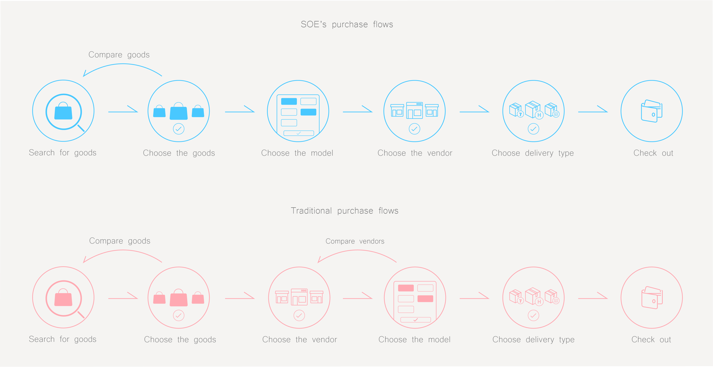

SOE is a startup project which focuses on ultimate online shipping experience. Because the particular market condition in Taiwan and the consumers inclination towards offline shopping prosper the real economy. And SOE is designed to take the advantage of the inclination and Taiwan GS1 barcode data source to offer O2O service.
Role
UX Designer
Tool
Sketch
Illustrator
Photoshop
Proto.io
FinalCut
Date
Sep 2016-
Feb 2017
Project Overview
One application, all platforms
SOE is a startup project which focuses on ultimate online shopping experience. It's because the
particular market condition in Taiwan and the consumers' inclination that both prosper the real economy.
And SOE is designed to take the advantage of the consumers inclination of offline shopping and the Taiwan GS1 open
barcode data source to not only offer O2O service, but also the optimized shopping experience for all users. We
meticulously designed different purchase solutions for various categories of goods due to their different
characteristics, market conditions and buyers' inclination.
Platform Features
Based on barcode, oreinted for goods
Barcode Connection Cloud
Barcode connection cloud supported by GS1 data base is the foundation of this APP. It connects myriad information of goods and venders, which allows users to choose the most suitable vendors after selecting their desirable goods.
Online & Offline Vendors
SOE creates its own ecosystem by incorporating traditional offline vendors who seldom involve in e-commerce. Also, SOE would cooperate with various platforms and actual shops giants, such as pharmacies, cosmetics stores and computer stores, to offer the all-round shopping choices for users.
Simplified Interaction Flows
With the powerful barcode cloud, SOE's purchase interation flows can be much easier and more explicit than normal shopping platforms'. The connections between goods and vendors can utmostly provide a price range for specific goods, which is also the core mechenism of SOE's simplicity.
Goods Oriented
SOE's purchase philosophy is goods oriented. Unlike traditional platforms, which also allow users to purchase things in the premise of premium sellers and brands, users on SOE will and can only purchase goods by first selecting their desirable products, then compare which venders they want to buy from.
Purchase + Map
The incorporated Google Map API is critical for those goods which depend largely on user experience or certification, as like 3C products, cosmetic and dietary supplement. The platform can provide great volume for vendors, and the actual shopping experince can utmosly increase vendors' credence.
Unified Certificated Goods Information
The barcode cloud data base is refined from GS1 data source, which can offer users the most accurate information of products. Also, the platform will incorporate other platforms, which allow users to double check the accuracy of information and enhance SOE's credibility.
The Mechanism
Everything starts with barcodes

The Principle
Connect vendors with goods
The whole SOE platform is constituted by the foundation of Barcode Open DataPool(GS1) open-sourced by
Taiwan government. Through filtering and refining myriad information of goods in the GS1, the core goods database of
SOE emerges. This database connects goods and vendors together, which allows users to find vendors who sell the
specific model of goods. And it’s this characteristic that differenciates SOE from the traditional platforms.

The Philosophy
Goods first, vendor second
SOE’s philosophy is presenting goods to users first, then offer all vendors of specific model of goods for users
to choose. This purchase is possible because each goods uploaded onto SOE database will be given an ID by barcode
database, which speficies its model information. So all the same model of goods can be attributed together. And
thus SOE cloud can find out all qualified goods after a user speficies goods’ model. Traditional flows, however,
depend on users to digger out the premium vendor after choosing the model.

The Solutions
Why so easy
Because different goods have different characteristics and market situations.(For example, fresh
food is not yet successful in O2O model) Due to the SOE cloud, SOE foucues on highly standardized
goods, such as 3C product, dietary supplement, cosmetic and grocery. For different goods we customized
a solution to solve the prevailing painpoints. What calls for special attention is that the grocery solution
can only operate when the money saved by buying in various wholesellers is greater than the
cost of delivery, or the purchase is large enough for waiving all the delivery cost.
Users can easily swipe right and choose to decrease the possibility of the goods they dislike, thereby browsing the platform with their preferable items for better experience.
SOE CUI
Users can call out Voice Control for faster and better searching experience. And there are the most popular and possible keywords of goods for Users to browse.
SOE CUI searching
Users can easily speak out the keywords of their goods and the results of goods in brand category will pop up. The brand category result is designed to explicitly display the relation between brands, models and prices.
SOE CUI searching
Users can easily speak out the keywords of their goods and the results of goods in brand category will pop up. The brand category result is designed to explicitly display the relation between brands, models and prices.
3C purchase flow
SOE customized a user flow for users to efficiently choose the goods and its model, find out the best vendor, set all the purchase information, and check out. The philosophy is to exploit 3C products' standardized information, and make comparing the vendors after choosing the goods.
Dietary supplement purchase flow
SOE customizes a solution for users who are used to purchasing dietary supplements offline due to the credibility offline and innudating goods online. Users can take advantage of the efficiency online to find their goods with desirable price, then they can be navigated to a series of stores with the assistence of navigation. So they can both find what they want and ensure the high quality.
Quick shopping of fresh food
Users could select a series of fresh food goods which they usually will buy in a large variety and volumes, avoiding clicking back and forth for adding into cart. It's like writing at one stretch.